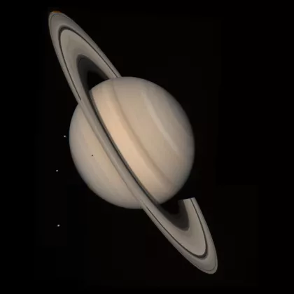

Remettre dans l'ordre les planètes du système solaire
Notre Terre
Uranus
Vénus

Mars
Neptune

Mercure

Jupiter

Saturne

Génie, rêveur, révolutionnaire… Albert Einstein n’était pas qu’un simple scientifique en blouse blanche. Son esprit a brisé les frontières du possible, transformant notre compréhension de l’espace, du temps et de l’énergie.Né en 1879, il passe d’un enfant curieux fasciné par une boussole à l’un des esprits les plus brillants de l’histoire. Avec sa théorie de la relativité, il nous apprend que le temps peut ralentir, que l’espace peut se courber et que l’énergie et la matière ne font qu’un : E = mc². Une équation simple, mais qui cache l’un des secrets fondamentaux de l’univers.Mais Einstein, c’est aussi un homme engagé, un pacifiste, un esprit libre qui osait remettre en question l’ordre établi. Son regard malicieux, sa tignasse indomptable et ses citations pleines de sagesse font de lui une icône bien au-delà des sciences.Aujourd’hui encore, son héritage façonne le monde moderne : du GPS que nous utilisons chaque jour à l’exploration des trous noirs. Il nous rappelle que "L’imagination est plus importante que le savoir"… et qu’avec un brin de curiosité, on peut repousser les limites de l’inconnu. 🚀
L’univers, vaste et insondable, n’a cessé d’intriguer l’humanité depuis la nuit des temps. Des galaxies lointaines aux trous noirs engloutissant la lumière, chaque recoin de l’espace est une invitation à la découverte. Mais que savons-nous réellement ? Des millions d’étoiles scintillent au-dessus de nos têtes, témoins silencieux de l’immensité cosmique. Les scientifiques, armés de télescopes de pointe, tentent de percer des énigmes fascinantes : la matière noire, la nature de l’énergie sombre ou encore l’origine du Big Bang. Chacune de ces découvertes nous rapproche d’une vérité qui semble toujours nous échapper. Si vous êtes passionné(e) par les secrets de l’espace ou simplement curieux(se) de ce que l’avenir de l’astronomie nous réserve, plongez avec nous dans cette aventure céleste. Explorez l’univers… et ses mystères insondables. 🚀✨
Vénus est la planète la plus chaude du Système solaire, avec des températures avoisinant les 475 °C en surface ! Pourtant, ce n’est pas la plus proche du Soleil – cet honneur revient à Mercure. Alors, pourquoi fait-il si chaud sur Vénus ? La réponse se trouve dans son atmosphère épaisse et étouffante, composée à 96 % de dioxyde de carbone, un puissant gaz à effet de serre. Ce dernier piège la chaleur du Soleil, créant un effet de serre infernal qui empêche toute fraîcheur de s’échapper. Résultat : une chaleur suffocante qui ferait fondre du plomb et des conditions plus extrêmes que sur certaines exoplanètes !
Uranus est la planète la plus froide du Système solaire, avec des températures pouvant plonger jusqu’à -224 °C ! Pourtant, elle n’est pas la plus éloignée du Soleil – Neptune l’est encore plus. Alors, pourquoi Uranus est-elle si glaciale ? Contrairement aux autres planètes géantes, elle émet très peu de chaleur interne. De plus, son axe de rotation fortement incliné, presque couché sur le côté, pourrait perturber la circulation de son atmosphère et empêcher la répartition de la chaleur. Résultat : une planète aux teintes bleu-vert qui cache un monde d’une froideur extrême, plus glacé encore que sa voisine Neptune !